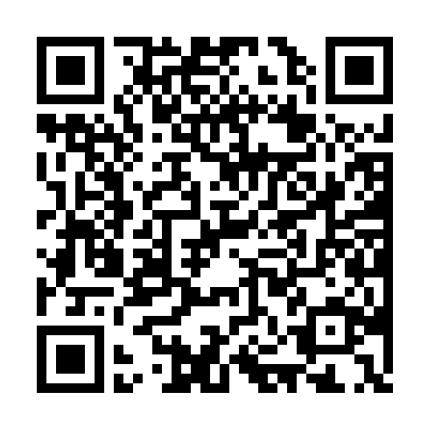

Doações
Para doações em dinheiro, temos opção via PIX ou depósito em conta.
Para doação via PIX, utilize o QRCode ao lado ou através do CNPJ:
CNPJ: 32.267.137/0001-01
Para doação via depósito em conta, utilize os seguintes dados:
Banco Bradesco
Ag: 2820
C/C: 0033390-2
CNPJ: 32.267.137/0001-01
Instituto Trilho Certo
Também recebemos doações de itens como roupas, sapatos, móveis, eletrônicos, brinquedos, etc. para venda no Bazar, que ocorre mensalmente para a própria comuniade para angariar recursos. Para doação de itens, favor entre em contato para maiores informações